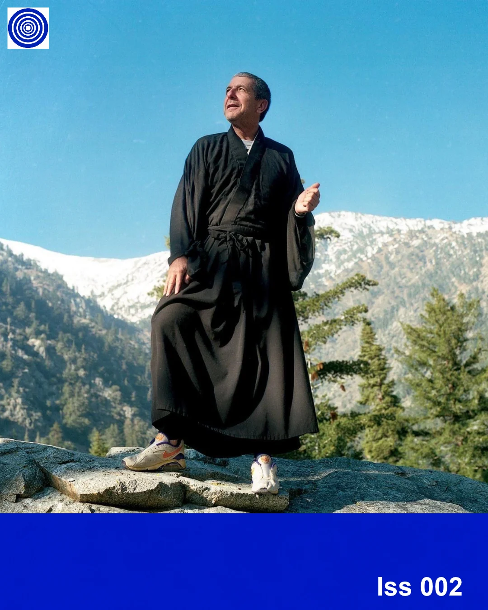
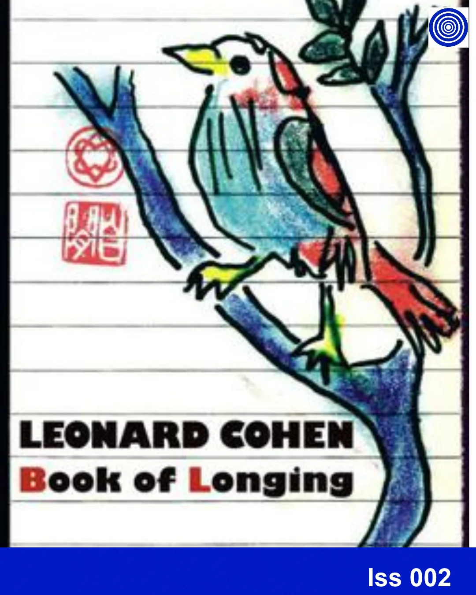
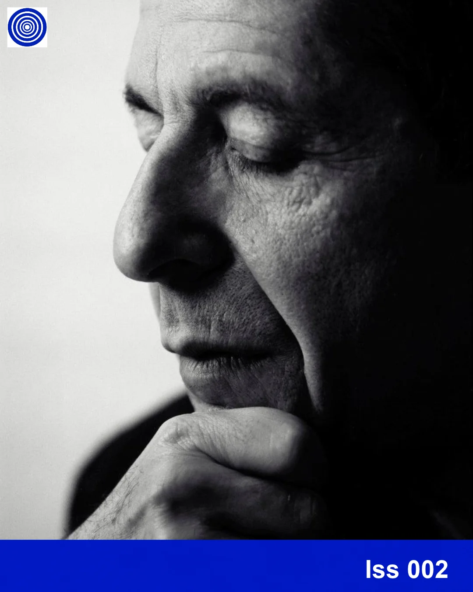
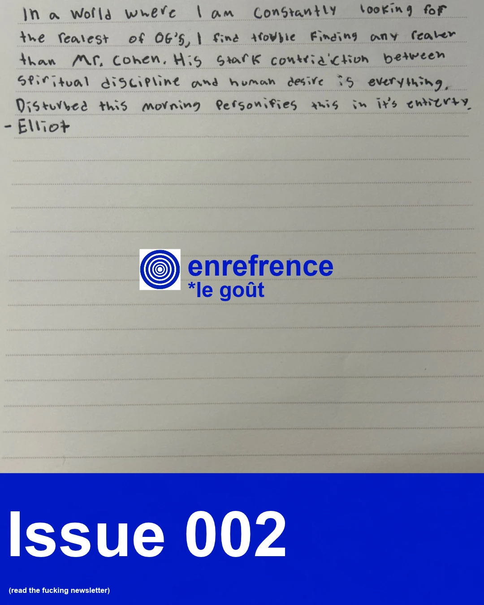

Issue 002
Leonard Cohen: The Lovesick Monk
Five years at Mount Baldy and the poetry of wanting.
Leonard Cohen went to a Zen monastery in 1994 and spent five years there. A poem from Book of Longing catches him in a less composed moment, surprised by a desire he thought had gone quiet.

The feature
Up in California’s San Gabriel Mountains, the routines of a Zen monastery gave one of music’s great romantics a different way to spend his days.
Cohen practiced under Joshu Sasaki at Mount Baldy Zen Center. He took the monastic name Jikan, “the silent one,” when he was ordained in 1996. He continued to identify as Jewish and found room for both traditions in his life.
Some of the poems and drawings he worked on at Mount Baldy made their way into Book of Longing, published in 2006. The collection moves readily from religious devotion to sex, aging, and jokes at Cohen’s own expense. Monastic life gave him another angle on the preoccupations that had always fed his writing.
In “Disturbed This Morning,” his equanimity lasts right up until he wants someone again. Cohen gives the return of desire the timing of a punchline and the candor of a confession.
From Book of Longing
Disturbed This Morning
The speaker has been enjoying a kind of serene affection for everyone. Then he finds himself longing for one person’s attention, and his thoughts get very specific. The poem narrows line by line as his attention narrows with it.

A note from Elliot

